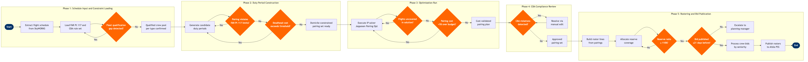

| Step | L4 Step Name | KPI / Target | Pain Point / Risk | Gate |
|---|---|---|---|---|
| 1.1 | Extract published flight schedule for pairing input | Schedule completeness ≥99.5% of planned departures loaded | Schedule changes from network planning arriving <72 hrs before month close disrupt pairing optimization cycles and require costly re-runs | |
| 1.2 | Load FAR Part 117 and CBA constraint parameters | 100% rule compliance across all published pairings | CBA rule amendments negotiated mid-planning cycle require manual rule re-entry into Jeppesen and full re-optimization, adding 8–12 hrs to the planning cycle | |
| 1.3 | Validate fleet type and crew qualification matrix | Zero unqualified crew assignments at publish; qualification data currency ≥99% | Mixed-fleet type-rating transitions (e.g., 737-800 to MAX) create temporary qualification bottlenecks that reduce eligible crew pools by up to 15% during conversion windows | ⚠ |
| 2.1 | Generate candidate duty periods from flight activity | Generate ≥50,000 candidate pairings per iteration; generation run time <30 min | Combinatorial explosion in dense network segments (e.g., 200+ daily departures from hub bases) causes candidate generation times exceeding 4 hrs, compressing the optimization window | |
| 2.2 | Filter candidate pairings against FAR Part 117 limits | 100% of retained pairings FAR Part 117 compliant; filter pass rate logged | Augmented crew rules for ultra-long-haul operations add rule complexity that standard Jeppesen rule builds handle inconsistently without custom coding, requiring manual legal audit | ⚠ |
| 2.3 | Enforce crew base and domicile deadhead constraints | Deadhead ratio ≤3.5% of total pairing block hours | Unbalanced base staffing at thin-market domiciles forces excessive deadheading; Jeppesen does not dynamically rebalance base headcount, requiring manual planner intervention | ⚠ |
| 3.1 | Execute integer programming pairing optimization | Pairing cost per block hour ≤$22 benchmark; solver convergence within 2 hrs | Column-generation solver can converge to local optima on irregular or charter-heavy schedules, requiring manual seed pairing injection and re-run, which add 3–5 hrs to cycle time | |
| 3.2 | Validate 100% flight coverage in optimized solution | 100% flight coverage — zero uncovered departures at validation | Last-minute schedule insertions post-optimization leave uncovered flights requiring manual pairing construction; no automated re-trigger exists in current Jeppesen deployment | ⚠ |
| 3.3 | Assess hotel and per-diem cost against budget targets | Layover hotel cost ≤$85/night average; total pairing cost within 5% of budget | Hotel contract gaps at thin-market outstations force use of non-preferred vendors exceeding CBA per-diem caps; contract database in SAP not always current with Jeppesen cost model | ⚠ |
| 4.1 | Run CBA work rule validation on all pairings | CBA violation rate <0.5% at initial validation run | CBA rules for minimum rest, trip rig provisions, and max monthly hours are version-controlled; mismatches between Jeppesen rule builds and actual contract language cause violations that trigger formal grievances | ⚠ |
| 4.2 | Resolve CBA violations via manual pairing edit | All violations resolved within 4 hrs; zero violations at final publish | Manual edits to resolve CBA violations frequently create secondary coverage gaps or cost overruns, requiring iterative re-optimization loops that compress downstream rostering windows | |
| 5.1 | Build crew roster lines from approved pairing set | Average monthly guaranteed-time utilization ≥82% of CBA contractual maximum | Constructing balanced roster lines that satisfy min/max flying-time guarantees across all domiciles while meeting productivity targets is highly constrained during holiday and off-peak schedule reductions | |
| 5.2 | Allocate reserve crew coverage by domicile | Reserve coverage ratio ≥110% of projected daily sick/IRROP requirement | Reserve sizing driven by IRROP scenarios requires holding excess reserves above minimum-legal levels, increasing direct crew costs by ~8%; Jeppesen reserve modelling does not natively simulate multi-day disruption cascades | ⚠ |
| 5.3 | Publish bid package to crew self-service portal | Bid package published ≥21 days before period start per CBA; 100% of lines posted | Delays in schedule finalization from network planning compress bid publication windows; missing the 21-day CBA requirement triggers grievance procedures and potential arbitration costs | ⚠ |
| 5.4 | Process crew bids and award by seniority | Bid award accuracy ≥99.9%; zero seniority inversion errors | Seniority list discrepancies from SAP SuccessFactors HR integration can cause bid inversions; manual corrections require re-award runs and generate formal grievances under the CBA | |
| 5.5 | Publish final rosters and sync to PSS | Roster publication ≥14 days before period start; PSS sync completed within 1 hr | Roster-to-PSS sync failures cause crew check-in discrepancies at airports; bidirectional reconciliation between Jeppesen and Altéa is not fully automated, requiring manual exception clearing |